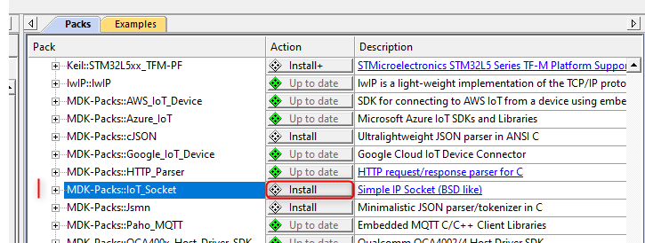
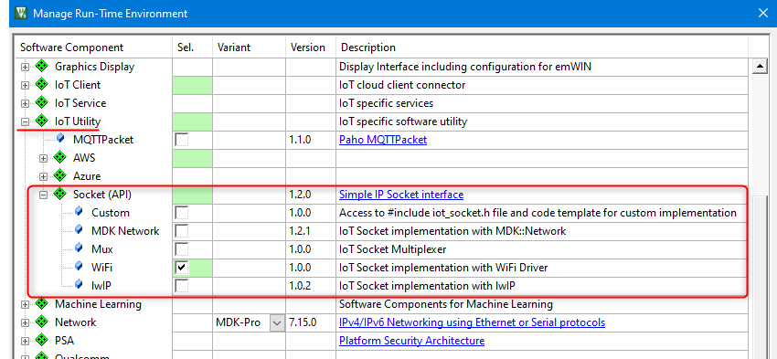
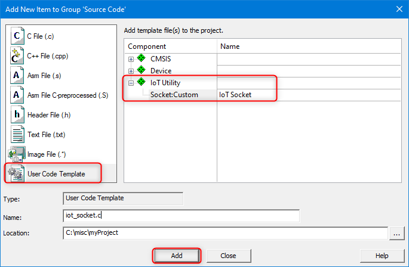

|
IoT Socket
Version 1.3.0
Simple IP Socket (BSD like)
|


|
|
IoT Socket
Version 1.3.0
Simple IP Socket (BSD like)
|
|
IoT Socket is available in CMSIS Pack format that simplifies its integration and lifecycle management in complex IoT projects. Section Examples provides information about example projects with IoT Socket interface.
This page explains how to use the IoT Socket pack. It takes Keil MDK as the target IDE, but the approach is similar for other development environments supporting CMSIS-Pack concept.
IoT Socket pack is public and can be added to the target IDE with the supported pack management service.
With Keil MDK use the Pack Installer utility and in the Packs tab - Generic category install the MDK-Packs::IoT_Socket pack.

Alternatively, the pack file can be downloaded directly from the CMSIS Packs page (in the MDK-Packs category). Double-click the local pack file and it will be added to your development environment.
IoT Socket pack contains following implementation variants:
iot_socket.h) to the include list and enables a template for custom IoT Socket implementation. See Custom IoT Socket for details.You can add an IoT Socket variant to a µVision project as follows:

Custom variant of the IoT Socket provides a template for implementing custom IoT Socket. Use the template in a µVision project as follows:
iot_socket.c.
Mux variant of the IoT Socket executes the API functions based on the mapping provided by the user with iotSocketRegisterApi function. This mechanism allows to retarget IoT communication to a different interface at run-time.
For example the procedure for enabling both MDK-Network and WiFi interfaces would be as follows:
source\mdk_network\iot_socket.c from the IoT Socket pack to your application folder.iot_socket_mdk.c.iotSocketXXX functions in the file, for example by changing the prefix and having them as mdkSocketXXX.source\wifi\iot_socket.c from the IoT Socket pack to your application folder.iot_socket_wifi.c.iotSocketXXX functions in the file, for example by changing the prefix and having them as wifiSocketXXX.mdkSocketXXX) and WiFi (wifiSocketXXX) socket functions respectively.A user application typically does not need to call the IoT Socket APIs directly, and instead can rely on the IoT Client interface that manages connectivity to the target service in the cloud (AWS, Azure, Google, proprietary). Keil Application Note 312 explains operation of such IoT clients and shows how IoT Socket is used by them.
IoT Socket functions resemble operation of BSD Socket APIs and so the principles of BSD sockets shall be followed when extending IoT clients with IoT Socket support, or when implementing custom IoT Socket variants on top of other network interfaces.